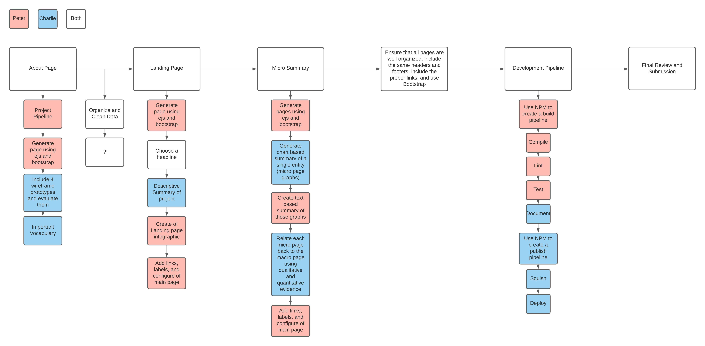

About Page
Project Pipeline and Division of Labor

Peter's rendition

Charlie's rendition

Evaluation of Wireframe Prototypes
- Both of our macro pages fell short in terms of understandability because pi charts and the pipeline format can be confusing in comparison to time series graphs.
- Both of our web designs were achievable because the data on this subject is abundant and the designs are fairly straightforward.
- Sometimes, both of our designs lacked simplicity, which contributed to them being less understandable. However, when we combine the best aspects of the prototypes, this becomes less of a problem.
- Both of our designs were politically neutral and just focused on presenting data instead.
Longterm Design
- We decided to take a general approach to the topic of unemployment, instead of focusing solely on the past year.
- We decided to indicate crisis years at the bottom of the macro page.
- We decided to use a time series graph instead of a pi chart graph because we thought it would allow viewers to see how unemployment in various industries changed over time.
- Because we both used time series graphs in our prototypes, we chose to use a time series graph indicating unemployment by each industry on each micro page.
- At the bottom of the micro page, we decided to analyze the trends within each page’s industry.
Relevant Vocabulary
- Unemployment rate: the percent of the total labor force (or the labor force of a particular industry that is not currently employed.
- Recession: According to Business Insider, “A recession is a period of decline in general economic activity, typically defined when an economy experiences a decrease in its gross domestic product for two consecutive quarters.” Increased
unemployment rates can also be another characteristic of a recession.
- Industry: an industry includes multiple companies that have generally similar business activities.